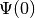
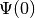
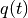
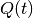
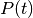
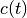

Using WaveBlocks for performing simulations¶
In this chapter we show how to use the WaveBlocks framework for performing simulations. The process is always the same and consists of a pre-processing step, a main step and a post-processing step. The preprocessing step is where we configure the simulations we want to perform. Then there is the main step where the simulations are run. Finally, there follows a postprocessing step where we evaluate the data and (optionally) create visualisations. We will see that the post processing step consists of many small and independent substeps reflecting the various options of what to do with the data obtained.
Set up and run a simulation¶
Let’s first show how to set up a single simulation. The basic workflow consists of several steps. First we have to prepare the simulation, then we run the main simulation program. This gives us a data file with the simulation results. Then we can apply various post processing steps, for example the computation of energies, plotting of norms and many more.
The first step is to create a configuration file and set the parameters. Let’s call the file parameters_01.py. The full content of this file is printed below:
algorithm = "hagedorn"
T = 12
dt = 0.01
dimension = 1
ncomponents = 1
eps = 0.1
potential = "quadratic"
# The parameter set of the initial wavepacket
Q = [[1.0]]
P = [[1.0j]]
q = [[1.0]]
p = [[0.0]]
S = [[0.0]]
# What it takes to specify a wavepacket!
wp0 = {
"type" : "HagedornWavepacket",
"dimension" : 1,
"ncomponents": 1,
"eps" : 0.1,
"Pi" : [q,p,Q,P,S],
"basis_shapes" : [{
"type" : "HyperbolicCutShape",
"K" : 10,
"dimension" : 1
}],
"coefficients" : [[ ((0,), 1.0) ]],
"quadrature" : {
"type" : "HomogeneousQuadrature",
'qr': {
'type': 'TensorProductQR',
'dimension': 1,
'qr_rules': [{'dimension': 1, 'order': 14, 'type': 'GaussHermiteQR'}]
}
}
}
# Which wavepackets are initial values
initvals = [ wp0 ]
leading_component = 0
# How often do we write data to disk
write_nth = 5
matrix_exponential = "pade"
For an overview of the available settings, see Required parameter sets.
Now we have to run the main simulation program. This is done by the following command:
python Main.py parameters_01.py
where we have to provide the configuration file as the first command line option of the Main.py program. When the program terminates, it leaves a file called simulation_results.hdf5 which contains all the simulation data. We can use the program hdfview to gain some insight of the contents of the file.
Running multiple simulations¶
Now we know how to run a single simulation. But most of the time we want to run a multitude of simulations. This is not more difficult, only the workflow changes a little bit. Throughout the next section we work in an arbitrary directory. All scripts called and all files referenced are assumed to lie within this working directory.
Preparation and Meta-configurations¶
First we need to generate a bunch of configurations. Of course we could write all the files by hand. However, for a set of simulations where just one or a few parameters vary, we can avoid this tedious work. The tool that takes over the task is named ConfigurationGenerator.py. It takes a so called meta configuration and then produces a set of ordinary configuration files.
Let’s look at a simple example: assume that our sample meta configuration file is metaconfiguration_02.py, its content is reprinted below:
# Global parameters that stay the same for all simulations :
GP = {}
GP["algorithm"] = "\"fourier\""
GP["potential"] = "\"delta_gap\""
GP["T"] = 3
GP["dt"] = 0.02
GP["parameters"] = "[ (1.0j, 1.0-6.0j, 0.0, 1.0, -6.0), (1.0j, 1.0-6.0j, 0.0, 1.0, -6.0) ]"
GP["coefficients"] = [ [(0 ,1.0)], [(0,0.0)] ]
GP["basis_size"] = 2
GP["ngn"] = 2**12
GP["f"] = 4.0
GP["write_nth"] = 2
# Local parameters that change with each simulation
LP = {}
LP["eps"] = [0.1, 0.5]
LP["delta"] = ["0.5*eps", "1.0*eps", "1.5*eps"]
The file is just another plain python file with only informal constraints. There must be two dicts named GP and LP in the top level namespace. The first one, GP, contains all the parameters that are global to the set of configuration. While the second one, LP, contains lists of the parameters that vary with each simulation. The configuration generator then computes the cartesian product of all these lists in LP. Then, for each tuple of this cartesian product it adds all parameters from GP, yielding a single configuration. Additionally to these two variables there can be another one which is used for global preambles. This variable has to be called PA and holds a (multi-line) python string of valid python code. These statements are written to the very top of every configuration file generated.
We can run the configuration generator as:
python ConfigurationGenerator.py metaconfiguration_02.py
and it will create the directory autogen_configurations where it puts all the configuration files. Let’s take a look into this directory:
ls -l autogen_configurations/
prints:
Parameters[eps=0.1][delta=0.5eps].py
Parameters[eps=0.1][delta=1.0eps].py
Parameters[eps=0.1][delta=1.5eps].py
Parameters[eps=0.5][delta=0.5eps].py
Parameters[eps=0.5][delta=1.0eps].py
Parameters[eps=0.5][delta=1.5eps].py
and we find 6 configuration files. One file for each combination of a value for eps and one for delta. The filenames contain all local parameters as key=value pairs. These can be used later in the post processing step by the functions from FileTools.py for sorting and grouping the simulations with respect to almost arbitrary criteria.
These configuration files can now be fed to the main simulation program one after another as shown in the last section. We could again do this manually but there is a better solution.
The batch loop¶
There is a simple python script Batch.py which does nothing else than running simulations for a set of configurations. The usage is really simple. First create a subdirectory called configurations by:
mkdir configurations
Then we put all the configurations we want to run in the loop into this directory. For example if we created the configurations by the means described in the last section we just do:
mv autogen_configurations/* configurations/
We can put as many simulations as we like into this directory. Each simulation is run totally independently from all others. At the moment we do not run the simulations in parallel but it would be possible to do this.
Now it is time to call the Batch.py script. The most simple call looks like:
python Batch.py
The first thing is does is to create a new directory called results. This is the place where it will put all the simulation results. Then it will call the Main.py script for each simulation configuration provided. After this it will run a bunch of data computation and plotting scripts. Finally it puts all the simulation results in a subdirectory of results whose name corresponds to the configuration file used. If we now look into the results directory by:
ls results
we see the listing:
Parameters[eps=0.1][delta=0.5eps]
Parameters[eps=0.1][delta=1.0eps]
Parameters[eps=0.1][delta=1.5eps]
Parameters[eps=0.5][delta=0.5eps]
Parameters[eps=0.5][delta=1.0eps]
Parameters[eps=0.5][delta=1.5eps]
and for the results of a single simulation (notice the necessary shell character escapes, you can also write the name without escapes in a pair of ”.)
ls results/Parameters\[eps\=0.1\]\[delta\=0.5eps\]
we have the following bunch of files:
energies_block0.png
energy_drift_block0.png
norms_block0.png
norms_drift_block0.png
norms_sqr_block0.png
Parameters[eps=0.1][delta=0.5eps].py
simulation_results.hdf5
Each directory within results contains at least the simulation parameters file (Parameters[eps=0.1][delta=0.5eps].py) and the simulation results file (simulation results.hdf5). If there were some plots generated, then these files are here too.
Advanced configuration of the batch loop¶
In the last section we saw how to use the so called batch loop. Now we reveal the full power of this script. The script can be called with a further configuration file. We call this file the batchconfiguration. Please do not confuse this with the simulation configuration file holding the physical simulation parameters for a single simulation and the metaconfiguration file specifying how to generate a bunch of closely related simulation configuration files.
The listing 2.3 shows the default batch configuration. The file is a plain python script file which contains only three lists. Each list holds the names of some other python scripts. The rest should be self-explanatory from the comments.
# Default configuration of which scripts are run in the
# batch loop . Change the content of the lists as you like
# but never rename the variables .
# All scripts in this list are called for each simulation
# configuration and with the configuration file as first
# command line argument
call_simulation = ["Main.py"]
# All scripts in this list are called for each simulation
# configuration but without additional arguments . They can
# assume that the simulation results data file is available
# at the default location ( ’./ simulation_results . hdf5 ’) .
call_for_each = ["ComputeNorms.py" ,
"ComputeEnergies.py",
# "PlotPotential.py",
"PlotNorms.py",
"PlotEnergies.py",
# "PlotWavepacketParameters.py",
# "PlotWavepacketCoefficients.py",
# "EvaluateWavepacketsEigen.py",
# "PlotWavefunction.py",
# "PlotWavepackets.py"
]
# The scripts in this list are called once after all
# simulations are finished and the results were moved
# to the final location ( default ’./ results /* ’) . Put
# all scripts that do comparisons between different
# simulations in here.
call_once = []
Running more scripts¶
Sometimes you may wish to run a script for a set of simulations long after the batch loop has terminated. Maybe you decided to compute a new observable or whatever. It would be tedious to call the script with each simulation_results.hdf5 and its correct file path manually. Exactly for this reason there is a script named ForAll.py. For example assume we want to plot the potential used in each simulation (which is identical in our example but never mind). Then we call:
python ForAll.py PlotPotential.py
which starts by printing:
Will execute the code in 'PlotPotential.py' for all files in 'results'
Executing code for datafile in results/Parameters[eps=0.5][delta=1.0eps]
...
and after a while quits with the text Done on the last output line. The script can take the path of the directory where the results lie (in the example above this is ./results/) as a third command line argument.
Computing more data¶
After we have run a simulation the output file simulation_results.hdf5 contains all data that were computed during the simulation. This is for example wavefunction values or wavepacket parameters etc. depending on the exact setup run. Usually we want also to compute some properties of the time evolution. This is done in a second step called post processing of the data. There are several scripts in the scripts/ subdirectory which post-process the simulation data.
Assume we want to compute the norms and energies of the wave function during its time evolution. These properties are not computed while running the simulation, but we can get them easily from the stored information. The following sections will show how to compute these data and store them in the output file simulation_results.hdf5 too.
All post-processing and plotting scripts can be called with an argument --help and provide modern command line switch handling.
python ComputeNorms.py --help
and will print a help message:
usage: ComputeNorms.py [-h] [-d [DATAFILE]] [-b [BLOCKID [BLOCKID ...]]] [-et]
optional arguments:
-h, --help show this help message and exit
-d [DATAFILE], --datafile [DATAFILE]
The simulation data file
-b [BLOCKID [BLOCKID ...]], --blockid [BLOCKID [BLOCKID ...]]
The data block to handle
-et, --eigentransform
Transform the data into the eigenbasis before
computing norms
Norms¶
Computing norms is trivial and fast. Just run the script:
python ComputeNorms.py
This will compute the norms of all wavepackets or wave functions depending on what the simulation setup was and what is already stored in simulation_results.hdf5.
Energies¶
Asking for the energies is almost equally trivial as computing norms. All we need is to run:
python ComputeEnergies.py
which will compute kinetic and potential energies.
Autocorrelations¶
The computation of auto-correlations is a bit more complicated. What we want to compute is the following overlap integral (here discussed in case of wavepackets):

which compares the wavepacket at time  with the initial value
 at time 0. Because this involves wavepackets at two different
times we need a specialised quadrature to get accurate results. We have to tell
the script which quadrature we would like to use. This is done best by adding a
top-level snippet like the following to the original simulation setup
configuration before the simulation is run. This will choose the
NSDInhomogeneous quadrature transformation using
GaussHermiteOriginalQR with 4 nodes and is for a one-dimensional
setup:
with the initial value
 at time 0. Because this involves wavepackets at two different
times we need a specialised quadrature to get accurate results. We have to tell
the script which quadrature we would like to use. This is done best by adding a
top-level snippet like the following to the original simulation setup
configuration before the simulation is run. This will choose the
NSDInhomogeneous quadrature transformation using
GaussHermiteOriginalQR with 4 nodes and is for a one-dimensional
setup:
# Configurations needed for computation of observables
observables = {
"autocorrelation" : {
"innerproduct" : {
"type" : "InhomogeneousInnerProduct",
"delegate" : {
"type" : "NSDInhomogeneous",
"qr" : {"dimension": 1, "order": 4, "type": "GaussHermiteOriginalQR"}
}
}
}
}
Warning
It is essential to take GaussHermiteOriginalQR as quadrature rule used by the NSDInhomogeneous transformation.
As a second example we show the corresponding snippet in case of a three dimensional simlation setup:
# Configurations needed for computation of observables
observables = {
"autocorrelation" : {
"innerproduct" : {
"type" : "InhomogeneousInnerProduct",
"delegate" : {
"type" : "NSDInhomogeneous",
"qr": {
"type": "TensorProductQR",
"dimension": 3,
"qr_rules": [
{"dimension": 1, "order": 5, "type": "GaussHermiteOriginalQR"},
{"dimension": 1, "order": 5, "type": "GaussHermiteOriginalQR"},
{"dimension": 1, "order": 5, "type": "GaussHermiteOriginalQR"}],
}
}
}
}
}
The only thing we have to do then is to call the corresponding post-processor script:
python ComputeAutocorrelation.py
Wavepacket sampling¶
If we made a simulation with wavepackets only and want to sample them on a regular grid for example for plotting then there is a script for this purpose:
python EvaluateWavepackets.py
This script is for homogeneous Hagedorn wavepackets only. For the inhomogeneous variant there is another script:
python EvaluateWavepacketsInhomog.py
Eigentransformations¶
For potentials with multiple energy levels it matters in which basis we compute observables. Since the simulation is done in the canonical basis and the observables usually should be computed in the eigenbasis there is a transformation involved. The scripts shown above do this transformation internally and there is no need to worry.
However, in case we explicitely do not want the transformation to take place (for example when working with single-level potentials) there are suitable post-processing scripts which can be recognised by a NET in their name:
ComputeNormsNET.py
ComputeEnergiesNET.py
ComputeAutocorrelationNET.py
The NET (No-Eigen-Transformation) variants never do a basis transformation and compute the requested observables on the data given assuming a correct basis. There is also a CAN variant which computes explicitely in the canonical basis:
ComputeEnergiesCAN.py
The reason why this script exists is that it makes a difference whether
we use  or
or  in the code.
in the code.
Explicit Eigentransformation¶
In case we want to convert all the simulation data (think: wavefunction values or wavepacket data) once to the eigenbasis there is this script:
python ComputeTransformToEigen.py --help
According to its help text:
usage: ComputeTransformToEigen.py [-h] [-i INPUTFILE] [-o OUTPUTFILE]
optional arguments:
-h, --help show this help message and exit
-i INPUTFILE, --inputfile INPUTFILE
The data file to read the data from.
-o OUTPUTFILE, --outputfile OUTPUTFILE
The data file to write the transformed data.
it will read the input file simulation_results.hdf5 and write output into a new data file. A typical invoke could look like:
python ComputeTransformToEigen.py -i simulation_results.hdf5 -o simulation_results_eigen.hdf5
Visualisation¶
The post processing step usually splits into two substeps. First we compute additional data and then we visualise these data. The two substeps are performed by individual scripts. All these scripts optionally take the filename or filepath of the simulation_results.hdf5 as a further command line argument.
In this section we look at the plotting scripts used to visualize common aspects of the simulated objects.
Plotting Observables¶
For plotting the usual observables norm, energy and autocorrelation the following scripts can be used:
PlotNorms.py
PlotEnergies.py
PlotAutocorrelations.py
Plotting Wavepackets¶
Given a Hagedorn wavepacket  we can plot various quantities like the
time evolution of the parameter set
we can plot various quantities like the
time evolution of the parameter set  . In one and
. In one and  dimensions this is done with:
dimensions this is done with:
PlotWavepacketParameters1D.py
PlotWavepacketParametersDD.py
Further in case of a two dimensional simulation we can plot the trajectories
of  and  in the
in the  plane by:
plane by:
PlotWavepacketParametersTrajectory2D.py
For a schematic propagation plot including also the spreads  and  of the packets we can use:
PlotWavepacketParametersSchema2D.py
Plotting the wavepacket coefficients  can be done by several scripts available which emphasize different aspects. Usually one wants to use one of:
PlotWavepacketCoefficients.py
PlotWavepacketCoefficientsStem.py
Especially for higher dimensional wavepackets the other two scripts can give better visualizations:
PlotWavepacketCoefficientsMapEigen.py
PlotWavepacketCoefficientsMap.py
Note
These scripts can easily fail for too long simulations. In case this happens, try to plot less values by dropping some intermediate timesteps.
By evaluating a wavepacket we can also plot contours in case of a two dimensional simulation:
PlotWavepacket2DcontourOTF.py
This script does plot each wavepacket immediately after evaluation and hence is much more efficient than evaluation of all packets first followed by a plot script for wavefunctions.
Plotting Wavefunctions¶
Plotting wavefunctions is easy. In one dimension we use this script:
PlotWavefunction1D.py
to plot complex valued wavefunctions by applying the usual color coding representing the phase. In two dimensions we can either make contour plots or three dimensional surface plots by calling either of:
PlotWavefunction2Dcontour.py
PlotWavefunction2Dsurface.py
Three and higher dimensional wavefunctions can not be plotted but the need to do so occurs rarely anyway due to the vast amount of data involved. All plot scripts can set the viewport by command line arguments, for example:
python ../plotters/PlotWavefunction1D.py --help
usage: PlotWavefunction1D.py [-h] [-d [DATAFILE]] [-p [PARAMFILE]]
[-b [BLOCKID [BLOCKID ...]]] [-x XRANGE XRANGE]
[-y YRANGE YRANGE] [--plotphase]
[--plotcomponents] [--plotabssqr]
optional arguments:
-h, --help show this help message and exit
-d [DATAFILE], --datafile [DATAFILE]
The simulation data file
-p [PARAMFILE], --paramfile [PARAMFILE]
The configuration parameter file
-b [BLOCKID [BLOCKID ...]], --blockid [BLOCKID [BLOCKID ...]]
The data block to handle
-x XRANGE XRANGE, --xrange XRANGE XRANGE
The plot range on the x-axis
-y YRANGE YRANGE, --yrange YRANGE YRANGE
The plot range on the y-axis
--plotphase Plot the complex phase (slow)
--plotcomponents Plot the real/imaginary parts
--plotabssqr Plot the absolute value squared
Plotting the Potentials¶
One and two dimensional potentials can be plotted by invoking:
PlotPotential1D.py
PlotPotential2D.py